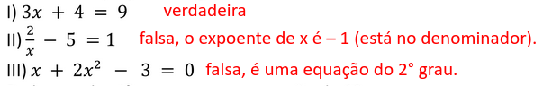

Mathema = tem se dedicado a
criar soluções que estimulam
competências como resolver
problemas e pensar criticamente.
Tica = técnica usada.
Página do professor https://martematica.github.io/cemca
Contrato Didático
Compromisso com horário
Proibido o uso celular durante a aula
Avaliação do empenho e desempenho
respeito entre professor e aluno
Ordem do conhecimento matemático = problema -> estudo -> solução -> padronização -> formalização do conteúdo
Conteudos Programados 1° trimestre
Nivelamento
Equações 1° e 2° grau
Fatoração e porcentagem
Conjuntos
Análise combinatória
Permutação
Fatorial
Arranjos
Combinações
Atividades
Em uma sala de 31 alunos temos 7 meninas a mais que a quantidade de meninos. Qual a quantidade de cada?
Definição
A equação do 1º grau é uma equação que possui incógnita com grau 1.

Três numeros consecutivo samados obtemos 90. Quais são estes números?
Três numeros consecutivo impares samados obtemos 123. Quais são estes números?
Sabemos que o preço da picanha bovina é R$ 20,00 mais caro que a carne de costela.
Comprando 2kg de costela e 1kg de picanha gasta-se R$ 140,00. Qual o valor de cada carne?
O salário de um vendedor é composto por uma parte fixa de R$ 850,00 mais uma comissão de R$ 60,00 a
cada produto vendido. Se em um determinado mês um cliente recebeu o salário de R$ 1870,00, a quantidade
de produtos vendidos foi igual a?